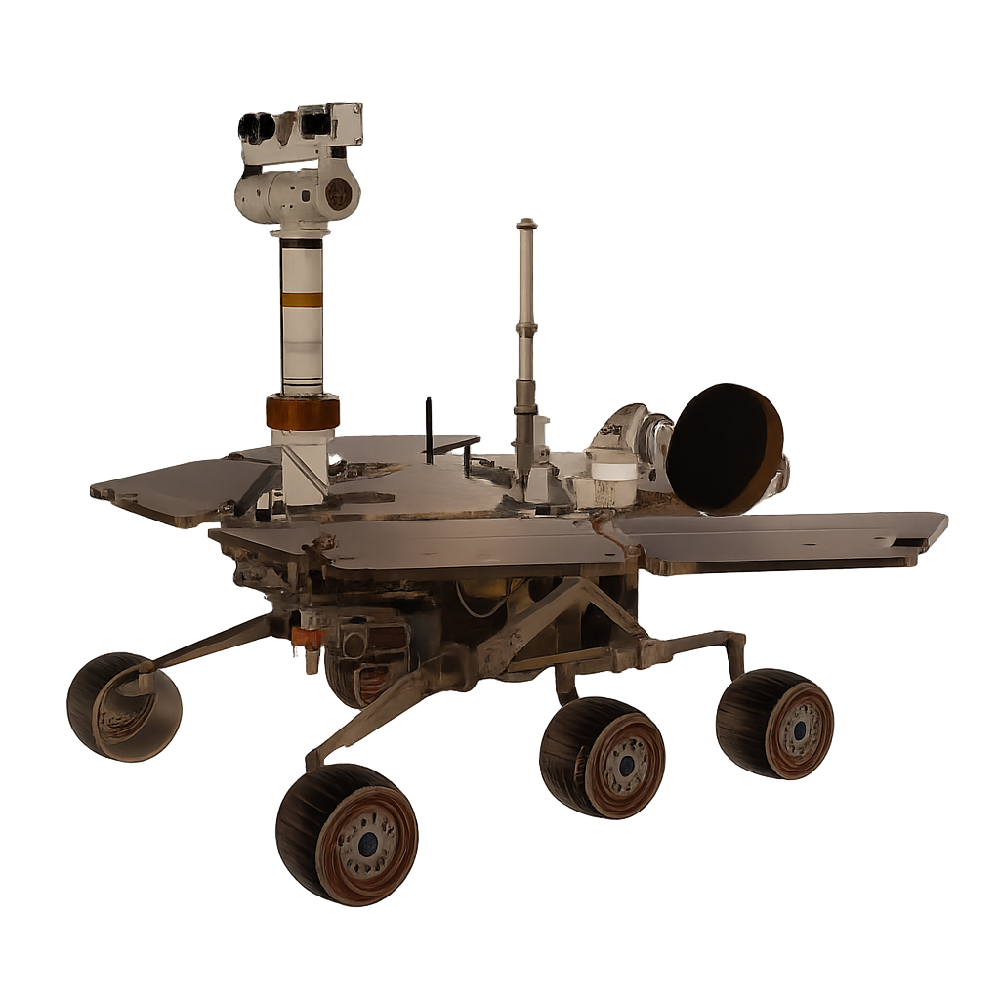

Project Summary
Reachability–Stability Trade-offs in Rover–Manipulator Systems
A system-level framework for evaluating how rover mobility, manipulator configuration, and terrain jointly shape usable workspace in planetary exploration.
Research Question
Which rover mobility architecture and manipulator configuration maximise reachable workspace while maintaining static stability under terrain disturbances?
KEY Contributions
1. Unified reachability–stability evaluation framework;
2. Scalable configuration-space exploration;
3. Mobility-driven design insights.

System architecture and pipeline overview.
Place your image at
assets/core-project/framework-diagram.png.